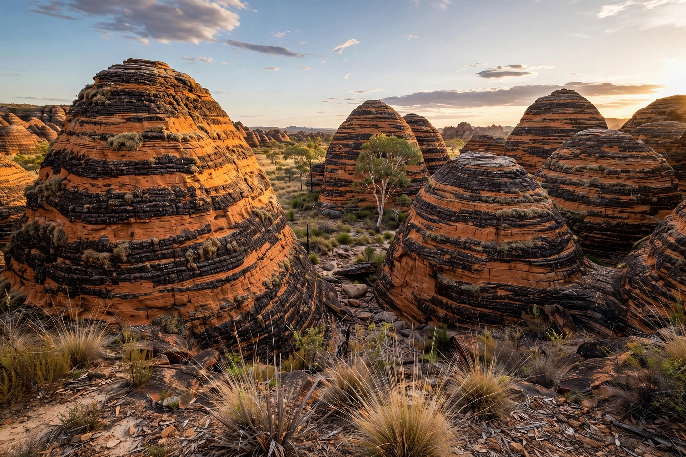

| Purnululu National Park | |
|---|---|
| Location | Kimberley, Western Australia |
| Area | 2,397 km² |
| Established | 1987 |
| UNESCO | World Heritage Site (2003) |
Purnululu National Park is a national park in the East Kimberley region of Western Australia, famous for the Bungle Bungle Range — a maze of orange-and-black striped sandstone towers and beehive-shaped domes. The park was inscribed on the UNESCO World Heritage List in 2003 for its exceptional natural beauty and geology.

The range rises some 250 metres above the surrounding savanna plain. Its domes are formed of Devonian-age sandstone whose surface is striped by bands of dark cyanobacteria (which retain moisture) and bright orange silica-stained rock. Though Aboriginal people knew the area intimately for tens of thousands of years — "Purnululu" is a Kija word for sandstone — the range remained virtually unknown to the wider world until it was filmed from the air in the early 1980s.
The park is open mainly in the dry season (roughly April to November) and reached by four-wheel-drive track or scenic flight from Kununurra. Highlights include Cathedral Gorge, a natural amphitheatre, and the walking trails of Piccaninny Creek. The park is jointly valued for its Aboriginal cultural heritage, with rock art and occupation sites throughout.